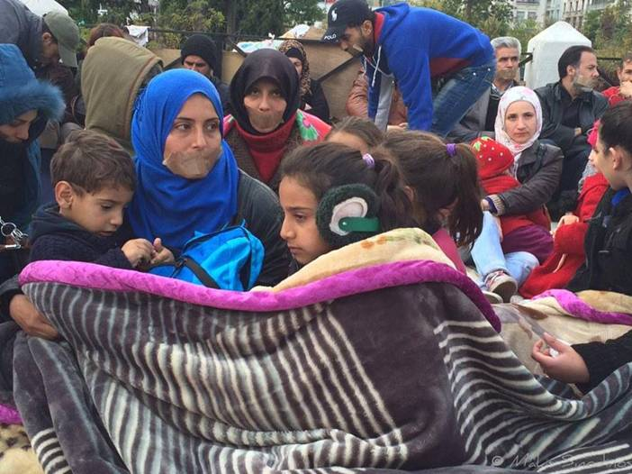

Submitted on Sat, 12/06/2014 - 9:07pm
 Details here: https://www.facebook.com/events/732791720128693/
Details here: https://www.facebook.com/events/732791720128693/
If you would like to send holiday greeting cards to IWW members in prison, please send a note to the IWW Incarcerated Workers Organizing Committee (IWOC) Facebook page and they will provide you with addresses. If you let us know what state you live in, we can try to provide addresses of people in your state.
Please use a PO Box for the return address so that strangers and prison staff do not have your home address.
Please keep in mind that many of the people in prison are Muslim so non-religious greeting cards are probably best.
Solidarity!
Submitted on Fri, 12/05/2014 - 7:47pm
Almost 300 Syrian refugees sit in Syntagma square, outside the Greek parliament, asking for asylum from the Greek state and solidarity from the Greek society. Women, men and children have occupied the central square of Athens since Wednesday afternoon, protesting in peace against the apathy of the Greek government. It’s been longer than a month that these people have been wandering in the city’s streets with no shelter, spending their nights in one of the few Athenian parks (Pedion tou Areos). They have already submitted a resolution with their demands to the Parliament but the only answer they have received is a warning by the police that they won’t be allowed to spend the night in Syntagma square.
Submitted on Mon, 12/01/2014 - 3:58pm

Headlines:
- Whole Foods Workers Demand Higher Wages And A Union
- Toronto Harm Reduction Workers Organize With The IWW
- IWW Resurgence In Bellingham, Washington
Features:
- Farewell, Fellow Worker Fred Lee
- Oregon Canvassers Continue Push For Unionization
- Understanding Co-ops And The IWW
Download a Free PDF of this issue.
Submitted on Sun, 11/30/2014 - 1:34pm
 From the TC Organizer
From the TC Organizer
Red November, Black November
Red November, black November,
Bleak November, black and red.
Hallowed month of labor’s martyrs,
Labor’s heroes, labor’s dead.
Labor’s wrath and hope and sorrow,
Red the promise, black the threat,
Who are we not to remember?
Who are we to dare forget?
Black and red the colors blended,
Black and red the pledge we made,
Red until the fight is ended,
Black until the debt is paid.
— Ralph Chaplin (1932)
This is a somber month for labor.
The Haymarket Martyrs were executed in November. Joe Hill was put before a firing squad in Utah during November. Bueventura Durruti was killed in November. The Centralia, Everett and the First Columbine massacres all occurred in November.
Submitted on Tue, 11/25/2014 - 8:08am
Students at Norman High School in Norman, Oklahoma walkedout of their classes at 9:20 A.M. on Monday, November 24th, 2014 greeted by hundreds of activists and supporters boldly standing with them in solidarity. Why?
Throughout the semester, an 18-year-old senior at the school raped three female students, publicized the rapes and humiliated the survivors. These girls were met with bullying and harassment, one being forced to leave the school because of constant hazing; another was not even able to enter the school before being violently confronted by the rapist's friends. Another retaliated when being harassed and was asked to leave the school for the remainder of the year until things "blow over." The administration punished the survivor for self-defense and has done nothing to address rape, sexual assault and harassment in their school community.